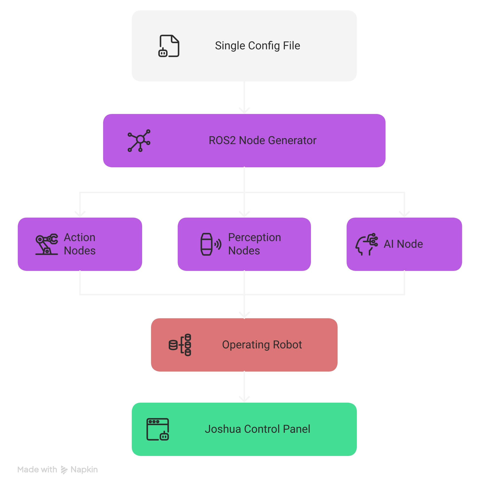

System Architecture
Comprehensive technical reference for the JOSHUA (Joint Open-Source Humanoid Undertaking for Advancement) robotics framework architecture, covering the modular layered design, data flow, runtime behavior, and ROS2 integration.
System Overview
JOSHUA is a modular, configuration-driven robotics framework that transforms declarative configuration files into a running system of coordinated ROS2 nodes. The framework eliminates hard-coded robot definitions by using Protocol Buffer text-format files (.pbtxt) as the single source of truth for all robot behavior.
The core execution pipeline follows a straightforward path:
.pbtxt) is loaded by joshua_main, which invokes the NodeGenerator to parse, validate, and fork/exec individual child processes for each ROS2 node defined in the configuration.
┌─────────────┐ ┌──────────────┐ ┌────────────────┐ ┌──────────────────┐
│ .pbtxt │────▶│ joshua_main │────▶│ NodeGenerator │────▶│ fork() + execv() │
│ Config │ │ (entry) │ │ (orchestrator) │ │ per ROS2 node │
└─────────────┘ └──────────────┘ └────────────────┘ └──────────────────┘This design means that adding a new sensor, changing an actuator, or reconfiguring the entire robot requires only editing a configuration file -- no recompilation, no code changes. The NodeGenerator handles all the complexity of determining backends, resolving dependencies, and managing process lifecycles.

Layered Architecture
JOSHUA is organized into six distinct layers, each with clearly defined responsibilities and interfaces. Layers communicate through well-defined boundaries, allowing any layer to be modified or replaced without affecting others.
┌───────────────────────────────────────────────────────────────────┐
│ 6. User Interface Layer │
│ Qt6 Desktop | React Web UI │
├───────────────────────────────────────────────────────────────────┤
│ 5. AI Layer │
│ Model Registry | Inference | Training Pipeline │
├───────────────────────────────────────────────────────────────────┤
│ 4. Robot Layer (HAL) │
│ Action (Actuators) | Perception (Sensors) | Comms │
├───────────────────────────────────────────────────────────────────┤
│ 3. Node Generator (Orchestrator) │
│ Parse Config | Validate | Backend Select | fork+execv │
├───────────────────────────────────────────────────────────────────┤
│ 2. Launcher Layer │
│ joshua_main entry point | Mode routing (sim vs real) │
├───────────────────────────────────────────────────────────────────┤
│ 1. Configuration Layer │
│ Protocol Buffers .pbtxt files │
└───────────────────────────────────────────────────────────────────┘Layer 1: Configuration Layer
The foundation of the entire system. All robot behavior, node topology, hardware mappings, and operational parameters are declared in Protocol Buffer text-format (.pbtxt) files. This layer serves as the single source of truth for what the robot is and how it should operate.
| Aspect | Details |
|---|---|
| Format | Protocol Buffers text format (.pbtxt) |
| Schema | Defined in .proto files with strict type validation |
| Scope | Robot identity, node definitions, hardware mappings, operation mode, QoS settings, AI model paths |
| Validation | Parsed and validated by the NodeGenerator at startup before any processes are launched |
Key configuration elements include:
- Robot identity -- name, model identifier, operational mode
- Node definitions -- node type, topic name, message type, QoS profile, backend preference
- Hardware mappings -- serial port paths, baud rates, device IDs, camera indices
- AI parameters -- model registry paths, inference batch sizes, checkpoint locations
- Simulation settings -- MJCF model paths, timestep, rendering options
# Example: minimal .pbtxt configuration
robot_config {
name: "so100_arm"
mode: MODE_TELEOPERATION
node {
type: CAMERA_PUBLISHER
topic_name: "/camera/image_raw"
message_type: "sensor_msgs/msg/Image"
qos_depth: 5
qos_reliability: BEST_EFFORT
camera_index: 0
preferred_backend: CPP
}
node {
type: ACTUATOR_SUBSCRIBER
topic_name: "/arm/commands"
message_type: "sensor_msgs/msg/JointState"
serial_port: "/dev/ttyUSB0"
baud_rate: 1000000
device_ids: [1, 2, 3, 4, 5, 6]
}
}Layer 2: Launcher Layer
The joshua_main binary is the single entry point for the entire framework. It reads the configuration file, initializes ROS2, and routes execution based on the declared operation mode.
joshua_main
├── Parse CLI arguments (config path, overrides)
├── Load and validate .pbtxt configuration
├── Initialize ROS2 context
├── Check operation mode
│ ├── MODE_SIMULATION ──▶ Launch MuJoCo simulation engine
│ └── All other modes ──▶ Instantiate NodeGenerator
└── Enter main event loopThe launcher layer is intentionally thin. Its sole responsibility is to bridge the configuration with the appropriate execution engine. For simulation mode, it delegates to the MuJoCo integration layer. For all real-hardware and AI modes, it instantiates the NodeGenerator to orchestrate the node topology.
Layer 3: Node Generator (Orchestrator)
The NodeGenerator is the central orchestration engine of JOSHUA. It transforms the declarative configuration into a running system of processes. This is the most complex layer, responsible for configuration parsing, validation, backend selection, process lifecycle management, and graceful shutdown coordination.
The NodeGenerator performs the following steps in sequence:
- Parse configuration -- Deserialize the
.pbtxtfile into the internal protobuf representation - Validate configuration -- Check for required fields, valid enum values, port conflicts, and device availability
- Determine backend -- For each node, decide whether to use the C++ or Python implementation based on node type, hardware requirements, and availability
- Fork and exec -- For each validated node, call
fork()to create a child process, thenexecv()to replace it with the appropriate node binary - Monitor children -- Track all child PIDs, handle
SIGCHLDsignals, and manage the process lifecycle
Process Lifecycle Signals
The NodeGenerator manages child processes using a cascading signal strategy:
| Signal | Purpose | Behavior |
|---|---|---|
SIGINT |
Graceful shutdown request | Sent first; allows nodes to clean up resources, flush buffers, and disconnect hardware |
SIGTERM |
Forceful termination request | Sent if the node does not exit within the grace period after SIGINT |
SIGKILL |
Immediate forced kill | Last resort if SIGTERM is also ignored; guarantees process termination |
Layer 4: Robot Layer (HAL)
The Robot Layer provides the Hardware Abstraction Layer (HAL) that isolates the framework from specific hardware implementations. It is divided into three subsystems:
Action Subsystem (Actuators)
Handles all output to the physical world. The action subsystem uses a factory pattern to instantiate the correct driver based on the configuration. Supported actuator types include:
- STS3215 servo motors -- Serial TTL communication at up to 1Mbps, supporting position, speed, and torque control modes
- Pybricks motors -- Bluetooth Low Energy (BLE) communication for LEGO-compatible motors
- Mock actuators -- Software-only implementations for testing and development
Perception Subsystem (Sensors)
Handles all input from the physical world. Each sensor type is published on its own ROS2 topic with configurable Quality of Service (QoS) settings:
- Camera -- OpenCV-based capture with configurable resolution, frame rate, and encoding
- LiDAR -- LDS01 laser distance scanner for 2D mapping and obstacle detection
- Encoder -- Motor position feedback for closed-loop control
- IMU -- Inertial measurement for orientation and acceleration
Communication Subsystem
Provides the transport layer for hardware communication:
- Serial (UART/TTL) -- Boost.Asio-based asynchronous serial I/O for servo motors and LiDAR
- Bluetooth Low Energy (BLE) -- For wireless Pybricks motor communication
- USB -- For camera and other USB peripherals
Layer 5: AI Layer
The AI layer provides a unified interface for model management, real-time inference, and training pipelines. It is designed to be model-agnostic, supporting multiple frameworks and model architectures through a common registry and inference protocol.
| Component | Technology | Purpose |
|---|---|---|
| Model Registry | HuggingFace Hub | Versioned model storage, download, and caching; supports local and remote models |
| Inference Nodes | PyTorch, HuggingFace Transformers | Real-time model inference as ROS2 nodes; subscribes to sensor topics, publishes action commands |
| Training Pipeline | JAX/Flax, Stable-Baselines3, LeRobot | Reinforcement learning (PPO) and imitation learning; GPU-parallel via MuJoCo-XLA |
Inference nodes always run as Python processes (regardless of backend preference) because they depend on the PyTorch and HuggingFace ecosystems. The inference node subscribes to perception topics (camera images, joint states) and publishes action commands to actuator topics.
Layer 6: User Interface Layer
JOSHUA provides two complementary user interfaces for monitoring, control, and configuration:
| Interface | Technology | Use Case |
|---|---|---|
| Desktop GUI | Qt6 / C++ | Real-time robot control, servo calibration, live telemetry visualization, direct hardware interaction |
| Web UI | React 18, Tailwind CSS, Radix UI, Vite | Remote monitoring, topology visualization, Zenoh SSE-based live data streaming, multi-robot dashboards |
Both interfaces connect to the running ROS2 system: the Qt6 desktop application communicates directly via ROS2 client libraries, while the React web UI uses a Zenoh bridge with Server-Sent Events (SSE) for real-time data streaming over HTTP.
Data Flow
The complete data flow from configuration to running system follows a deterministic pipeline. Understanding this flow is essential for debugging and extending the framework.
┌──────────────────┐
│ .pbtxt Config │
└────────┬─────────┘
│
▼
┌──────────────────┐
│ joshua_main │
└────────┬─────────┘
│
┌──────────┴──────────┐
│ │
▼ ▼
┌─────────────────┐ ┌─────────────────┐
│ MODE_SIMULATION │ │ All Other Modes │
└────────┬────────┘ └────────┬────────┘
│ │
▼ ▼
┌─────────────────┐ ┌─────────────────┐
│ MuJoCo Engine │ │ NodeGenerator │
└─────────────────┘ └────────┬────────┘
│
┌───────────┼───────────┐
│ │ │
▼ ▼ ▼
┌──────────┐ ┌──────────┐ ┌──────────┐
│ Identify │ │ Check │ │ fork() + │
│ Nodes │ │Integrity │ │ execv() │
└──────────┘ └──────────┘ └─────┬────┘
│
▼
┌─────────────────┐
│ Monitor Children│
│ (SIGCHLD) │
└─────────────────┘Step-by-Step Data Flow
- Configuration Loading --
joshua_mainreads the.pbtxtfile from the path specified on the command line. - Mode Routing -- If the configuration specifies
MODE_SIMULATION, execution is routed to the MuJoCo simulation engine. All other modes proceed to theNodeGenerator. - Node Identification -- The
NodeGeneratoriterates over allnodeentries in the configuration, building an internal list of nodes to launch. - Integrity Check -- Each node is validated: required fields are present, device paths exist (for hardware nodes), model files are accessible (for inference nodes), and there are no topic name collisions.
- Process Spawning -- For each validated node, the
NodeGeneratorcallsfork()to create a child process. The child process then callsexecv()to replace itself with the appropriate node binary (C++ or Python). - Child Monitoring -- The parent process (NodeGenerator) monitors all children via
SIGCHLDhandling. If a child crashes, the NodeGenerator logs the event and can optionally restart the node based on policy.
Dual-Layer Data Type System
JOSHUA employs a dual-layer data type system that separates configuration-time types from runtime types. This separation provides type safety at configuration time while maintaining compatibility with the ROS2 ecosystem at runtime.
| Aspect | Configuration Layer | Runtime Layer |
|---|---|---|
| Technology | Protocol Buffers | ROS2 Messages |
| Format | Text format (.pbtxt) |
Binary serialized messages |
| Purpose | Declare what the system should be | Transport data between running nodes |
| Validation | Schema-enforced at parse time | Type-checked at compile/import time |
| When Used | Startup, before nodes are launched | At runtime, during node communication |
At the boundary between layers, protobuf-defined packets are serialized into ROS2 messages for transport. The two primary packet types are ActionPacket and PerceptionPacket.
ActionPacket
The ActionPacket encapsulates all outbound commands to actuators. It is a protobuf message that gets serialized into the payload of a ROS2 message for transport.
message ActionPacket {
// Motor position targets (radians or raw encoder ticks)
repeated float position = 1;
// Torque limits per joint
repeated float torque = 2;
// Speed targets per joint (rad/s or raw units)
repeated float speed = 3;
// Preset command identifiers
repeated string preset_commands = 4;
// Timestamp for synchronization
google.protobuf.Timestamp timestamp = 5;
}| Field | Type | Description |
|---|---|---|
position |
repeated float |
Target positions for each joint, in radians or raw encoder ticks depending on driver configuration |
torque |
repeated float |
Maximum torque limits per joint; used for compliant control and safety limiting |
speed |
repeated float |
Target velocities for velocity-mode control |
preset_commands |
repeated string |
Named preset commands (e.g., "home", "rest", "grip_open") resolved by the actuator driver |
PerceptionPacket
The PerceptionPacket encapsulates all inbound sensor data. Like the ActionPacket, it is defined in protobuf and serialized into ROS2 messages at runtime.
message PerceptionPacket {
// Raw image data (camera frames)
ImageData image = 1;
// Joint positions, velocities, and efforts
PositionData position = 2;
// Generic sensor readings (IMU, force/torque, temperature)
SensorData sensor = 3;
// 3D point cloud from depth sensors or LiDAR
PointCloudData point_cloud = 4;
// Timestamp for synchronization
google.protobuf.Timestamp timestamp = 5;
}| Field | Type | Description |
|---|---|---|
image |
ImageData |
Camera frames with encoding, resolution, and pixel data; maps to sensor_msgs/msg/Image |
position |
PositionData |
Joint states including position, velocity, and effort arrays; maps to sensor_msgs/msg/JointState |
sensor |
SensorData |
Generic sensor readings (IMU, force/torque, temperature); maps to appropriate sensor_msgs type |
point_cloud |
PointCloudData |
3D point cloud data from depth cameras or LiDAR; maps to sensor_msgs/msg/PointCloud2 |
Backend Selection Logic
One of JOSHUA's key features is its ability to select between C++ and Python implementations for each node at launch time. The NodeGenerator uses a deterministic decision process based on node type, configuration preference, and binary availability.
Selection Rules
C++ Preferred
The following node types default to C++ implementations when available, due to performance requirements or hardware interface constraints:
- STS3215 actuator drivers -- Requires precise timing for serial TTL communication at 1Mbps; C++ provides the deterministic timing needed
- OpenCV camera publishers -- C++ OpenCV bindings avoid the GIL overhead for high-framerate capture and encoding
- LDS01 LiDAR publishers -- Serial protocol parsing benefits from C++ performance for continuous scan data at high rotation speeds
Python Always
The following node types always use Python implementations, regardless of the preferred_backend setting:
- Inference nodes -- Depend on PyTorch and HuggingFace Transformers, which are Python-native libraries
- Data subscriber nodes -- Use Python data processing libraries (NumPy, pandas) for recording and dataset creation
- Mock device nodes -- Software-only simulated hardware for testing; Python provides rapid development
Fallback Behavior
If a node's preferred backend is C++ but the corresponding C++ binary is not found (e.g., not compiled for the current platform), the NodeGenerator automatically falls back to the Python implementation. A warning is logged when this fallback occurs.
Backend Selection Algorithm:
─────────────────────────────────
1. Read node.preferred_backend from config
2. If node type ∈ {INFERENCE, DATA_SUBSCRIBER, MOCK_*}:
→ Always use Python (override preference)
3. If preferred_backend == CPP:
a. Look for C++ binary at expected path
b. If found → use C++ binary
c. If not found → log warning, fall back to Python
4. If preferred_backend == PYTHON or unset:
→ Use Python implementation
5. execv() the resolved binary pathNode Lifecycle Management
The NodeGenerator is responsible for the full lifecycle of every child process, from creation to termination. Understanding this lifecycle is critical for debugging node failures and implementing custom nodes.
Lifecycle Phases
┌──────────┐
│ CONFIG │ Node defined in .pbtxt
└────┬─────┘
│
▼
┌──────────┐
│ VALIDATE │ Check fields, devices, paths
└────┬─────┘
│
▼
┌──────────┐
│ FORK() │ Create child process
└────┬─────┘
│
▼
┌──────────┐
│ EXECV() │ Replace with node binary
└────┬─────┘
│
▼
┌──────────┐
│ RUNNING │ Node is active, publishing/subscribing
└────┬─────┘
│
┌────┴────┐
│ │
▼ ▼
┌──────────┐ ┌──────────┐
│ CRASHED │ │ SHUTDOWN │ Normal exit or signal
└──────────┘ └──────────┘Cascading Shutdown Sequence
When the system receives a shutdown signal (e.g., Ctrl+C in the terminal), the NodeGenerator initiates a cascading shutdown of all child processes:
- SIGINT -- Sent to all child processes simultaneously. Nodes should handle this signal to perform graceful cleanup: flushing data, disconnecting from hardware, and saving state.
- Grace period -- The NodeGenerator waits for a configurable timeout (default: 5 seconds) for all children to exit voluntarily.
- SIGTERM -- Sent to any child processes that have not exited after the grace period. This is a stronger request to terminate.
- Second grace period -- Another short wait (default: 2 seconds) for remaining processes.
- SIGKILL -- Sent as a last resort to any processes still running. This signal cannot be caught or ignored, guaranteeing termination.
Shutdown Timeline:
─────────────────────────────────────────────────────────────▶ time
│ │ │ │
│ SIGINT to all │ Wait 5s │ SIGTERM │ SIGKILL
│ children │ (grace period) │ to stragglers│ (if needed)
│ │ │ │
t=0 t=0 t=5s t=7sDirectory Structure
The JOSHUA repository follows a structured layout organized by function. Each top-level directory corresponds to a major subsystem or build concern.
joshua/
├── .github/ # GitHub Actions CI/CD workflows
│ └── workflows/
│ ├── ci.yml # Continuous integration pipeline
│ └── docker-publish.yml # Docker image build and push
│
├── config/ # Configuration files (.pbtxt)
│ ├── robots/ # Per-robot configuration presets
│ │ ├── so100_arm.pbtxt # SO-100 single arm configuration
│ │ ├── so100_leader_follower.pbtxt
│ │ └── lego_bot.pbtxt # Pybricks LEGO robot configuration
│ └── proto/ # Protocol Buffer schema definitions
│ ├── robot_config.proto # Main configuration schema
│ ├── action_packet.proto # ActionPacket message definition
│ └── perception_packet.proto
│
├── joshua/ # Core framework source code
│ ├── main/ # Entry point
│ │ └── joshua_main.cc # Main binary (Launcher Layer)
│ │
│ ├── node_generator/ # Node Generator (Orchestrator)
│ │ ├── node_generator.h # NodeGenerator class definition
│ │ ├── node_generator.cc # Config parsing, fork+exec logic
│ │ ├── backend_selector.h # C++/Python backend selection
│ │ └── backend_selector.cc
│ │
│ ├── robot/ # Robot Layer (HAL)
│ │ ├── action/ # Actuator drivers
│ │ │ ├── sts3215/ # STS3215 servo motor driver (C++)
│ │ │ ├── pybricks/ # Pybricks BLE motor driver (Python)
│ │ │ └── factory.h # Actuator factory pattern
│ │ ├── perception/ # Sensor drivers
│ │ │ ├── camera/ # OpenCV camera publisher (C++/Python)
│ │ │ ├── lidar/ # LDS01 LiDAR publisher (C++/Python)
│ │ │ ├── encoder/ # Encoder publisher
│ │ │ └── factory.h # Sensor factory pattern
│ │ └── communication/ # Transport layer
│ │ ├── serial/ # Boost.Asio serial driver
│ │ └── ble/ # BLE communication
│ │
│ ├── ai/ # AI Layer
│ │ ├── model_registry/ # Model management and caching
│ │ ├── inference/ # Inference node implementations
│ │ │ └── smolvla/ # SmolVLA vision-language-action model
│ │ └── training/ # Training pipelines
│ │ ├── rl/ # Reinforcement learning (PPO)
│ │ └── imitation/ # Imitation learning
│ │
│ └── simulation/ # Simulation Engine
│ ├── mujoco/ # MuJoCo integration
│ │ ├── engine.h # Simulation engine interface
│ │ ├── engine.cc # MuJoCo physics stepping
│ │ └── renderer.cc # OpenGL/offscreen rendering
│ ├── mjx/ # MuJoCo-XLA GPU-parallel training
│ └── models/ # MJCF robot model files
│ ├── so100.xml # SO-100 arm MJCF model
│ └── lego_bot.xml # LEGO robot MJCF model
│
├── ui/ # User Interface Layer
│ ├── desktop/ # Qt6 desktop application
│ │ ├── main.cc # Qt6 entry point
│ │ ├── control_panel.cc # Robot control panel widget
│ │ └── calibration.cc # Servo calibration UI
│ └── web/ # React web application
│ ├── src/
│ │ ├── App.tsx # Root React component
│ │ ├── components/ # UI components
│ │ └── hooks/ # Zenoh SSE data hooks
│ ├── package.json
│ └── vite.config.ts
│
├── third_party/ # Third-party dependencies (Bazel)
│ ├── ros2/ # ROS2 workspace overlay
│ ├── mujoco/ # MuJoCo headers and libraries
│ └── protobuf/ # Protocol Buffers compiler
│
├── docker/ # Docker build files
│ ├── Dockerfile # Multi-stage production image
│ └── docker-compose.yml # Development environment
│
├── tools/ # Build and development tools
│ ├── pre-commit/ # Pre-commit hook scripts
│ └── scripts/ # Utility scripts
│
├── BUILD # Root Bazel build file
├── WORKSPACE # Bazel workspace definition
├── MODULE.bazel # Bazel module (bzlmod)
└── README.mdROS2 Integration
JOSHUA deeply integrates with ROS2 as its inter-process communication middleware. The framework supports ROS2 Humble (Ubuntu 22.04) and ROS2 Jazzy (Ubuntu 24.04) distributions.
Supported Message Types
JOSHUA supports 91 message types across five ROS2 message packages. These types can be assigned to any node in the configuration, and the framework handles serialization, deserialization, and QoS negotiation automatically.
| Package | Examples | Use Cases |
|---|---|---|
std_msgs |
String, Int32, Float64, Bool, Header |
Generic data transport, status flags, timestamped headers |
sensor_msgs |
Image, JointState, LaserScan, PointCloud2, Imu |
Camera frames, motor feedback, LiDAR scans, depth data, inertial measurements |
nav_msgs |
Odometry, Path, OccupancyGrid |
Robot localization, path planning, map representation |
geometry_msgs |
Twist, Pose, Transform, Wrench, Vector3 |
Velocity commands, spatial positions, force/torque data |
tf2_msgs |
TFMessage |
Coordinate frame transforms for the robot kinematic chain |
Configurable QoS
Each node's Quality of Service profile is configurable through the .pbtxt file. This allows fine-tuning of communication behavior per topic:
# QoS configuration options per node
qos_depth: 10 # Message queue depth
qos_reliability: BEST_EFFORT # BEST_EFFORT or RELIABLE
qos_durability: VOLATILE # VOLATILE or TRANSIENT_LOCAL
qos_history: KEEP_LAST # KEEP_LAST or KEEP_ALLBEST_EFFORT reliability for high-frequency sensor data (cameras, LiDAR) where dropping occasional messages is acceptable. Use RELIABLE for command topics (actuator subscribers) where every message must be delivered.
Node Types
JOSHUA defines seven standard node types, each with a specific role in the system. Custom node types can be added by extending the protobuf schema and implementing the corresponding publisher or subscriber.
| Node Type | Direction | Description | Typical Backend |
|---|---|---|---|
CAMERA_PUBLISHER |
Publisher | Captures frames from USB/CSI cameras and publishes as sensor_msgs/msg/Image |
C++ |
ENCODER_PUBLISHER |
Publisher | Reads motor encoder positions and publishes as sensor_msgs/msg/JointState |
C++ |
LIDAR_PUBLISHER |
Publisher | Reads LDS01 laser scanner data and publishes as sensor_msgs/msg/LaserScan |
C++ |
ACTUATOR_SUBSCRIBER |
Subscriber | Receives joint commands and writes to servo motors via serial protocol | C++ |
INFERENCE |
Pub/Sub | Subscribes to sensor topics, runs AI model inference, publishes action commands | Python (always) |
DATA_SUBSCRIBER |
Subscriber | Records topic data for training dataset creation (HuggingFace format) | Python (always) |
OPERATIONAL_LIMIT_CALIBRATION |
Pub/Sub | Runs servo calibration routines and publishes discovered operational limits | C++ |
Example: Multi-Node Configuration
The following example shows a complete configuration with multiple nodes working together for a teleoperation scenario:
robot_config {
name: "so100_leader_follower"
mode: MODE_TELEOPERATION
# Leader arm - reads positions from human operator
node {
type: ENCODER_PUBLISHER
topic_name: "/leader/joint_states"
message_type: "sensor_msgs/msg/JointState"
serial_port: "/dev/ttyUSB0"
baud_rate: 1000000
device_ids: [1, 2, 3, 4, 5, 6]
qos_reliability: RELIABLE
preferred_backend: CPP
}
# Follower arm - mirrors leader positions
node {
type: ACTUATOR_SUBSCRIBER
topic_name: "/leader/joint_states"
message_type: "sensor_msgs/msg/JointState"
serial_port: "/dev/ttyUSB1"
baud_rate: 1000000
device_ids: [1, 2, 3, 4, 5, 6]
qos_reliability: RELIABLE
preferred_backend: CPP
}
# Camera for monitoring and data collection
node {
type: CAMERA_PUBLISHER
topic_name: "/camera/image_raw"
message_type: "sensor_msgs/msg/Image"
camera_index: 0
qos_reliability: BEST_EFFORT
qos_depth: 5
preferred_backend: CPP
}
# Data recorder for imitation learning
node {
type: DATA_SUBSCRIBER
topic_name: "/leader/joint_states"
message_type: "sensor_msgs/msg/JointState"
output_format: "parquet"
output_directory: "/data/episodes"
}
}